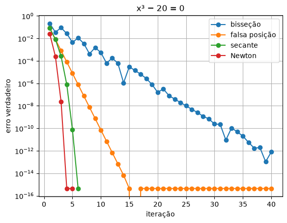

5. Newton e secante¶
A bisseção do capítulo 4 é segura, mas lenta: ela só olha o sinal de \(f\). Os métodos deste capítulo olham para onde a curva está indo, pela inclinação dela, e com isso chegam à raiz em pouquíssimas iterações. Com a tangente, cada iteração dobra o número de algarismos certos. É assim que a sua calculadora tira raiz quadrada.
A velocidade tem um preço. Esses métodos não prendem a raiz num intervalo: partem de um chute e podem se perder. Parte do trabalho é saber reconhecer quando isso acontece.
Newton-Raphson¶
🧑🏫 No quadro — o método de Newton-Raphson
1. No chute \(x_i\), trace a reta tangente à curva. A inclinação dela é \(f'(x_i)\), e ela passa pelo ponto \((x_i, f(x_i))\).
2. A tangente cruza o zero num ponto \(x_{i+1}\). Pela inclinação, \(f'(x_i) = \dfrac{f(x_i) - 0}{x_i - x_{i+1}}\).
3. Isole \(x_{i+1}\):
4. Perto da raiz, a curva é quase igual à tangente, e o novo ponto fica muito mais perto. Pela série de Taylor, o erro novo é proporcional ao quadrado do erro anterior: \(E_{i+1} \approx C\,E_i^2\). Erro de \(10^{-3}\) vira \(10^{-6}\), que vira \(10^{-12}\). É a convergência quadrática.
5. Para \(f(x) = x^2 - a\) (a raiz quadrada de \(a\)), a fórmula vira \(x_{i+1} = \frac{1}{2}\left(x_i + \frac{a}{x_i}\right)\): a média entre o chute e \(a\) dividido pelo chute. É o método babilônico, de quase 4000 anos atrás.
# Newton para a raiz de 2: f(x) = x**2 - 2, f'(x) = 2x.
# E assim (metodo babilonico) que se calculava raiz quadrada ha 4000 anos.
import numpy as np
exato = np.sqrt(2)
x = 1.0
print("it x erro")
for it in range(1, 6):
x = x - (x**2 - 2) / (2 * x)
print(f"{it:2d} {x:.16f} {abs(x - exato):.1e}")
it x erro
1 1.5000000000000000 8.6e-02
2 1.4166666666666667 2.5e-03
3 1.4142156862745099 2.1e-06
4 1.4142135623746899 1.6e-12
5 1.4142135623730951 0.0e+00
Olhe a coluna do erro: \(10^{-2}\), \(10^{-3}\), \(10^{-6}\), \(10^{-12}\) e depois zero.
O expoente dobra a cada iteração. Em 5 iterações, a raiz de 2 está com os 16
algarismos que o float consegue guardar.
💡 Pense assim: descer uma ladeira no escuro
A bisseção é descer tateando: um passo para cá, um para lá, sempre pela metade. Newton é olhar a inclinação do chão onde você está e seguir em linha reta até onde ela chegaria ao fundo. Se o chão for liso, você chega quase direto. Se tiver um degrau ou um buraco, você pode ir parar longe.
Newton sem derivar à mão¶
Newton precisa de \(f'(x)\). Para o paraquedista, derivar \(\sqrt{gm/c}\,\tanh(\ldots)\) em relação a \(m\) à mão é trabalhoso e fácil de errar. Mas o capítulo 2 ensinou a calcular derivadas sem derivar: a diferença central, com \(h\) pequeno.
# Newton-Raphson para a massa do paraquedista. A derivada f'(m) sai por
# diferenca central (capitulo 2): nao e preciso deriva-la a mao.
import numpy as np
g = 9.81
c = 0.25
t = 4
def f(m):
v = np.sqrt(g * m / c) * np.tanh(np.sqrt(g * c / m) * t)
return v - 36
def derivada(f, x):
h = 1e-5
return (f(x + h) - f(x - h)) / (2 * h)
x = 100.0 # chute inicial
print(" it x f(x) eps_a (%)")
for it in range(1, 11):
anterior = x
x = x - f(x) / derivada(f, x)
eps_a = abs((x - anterior) / x) * 100
print(f"{it:3d} {x:10.6f} {f(x):11.2e} {eps_a:9.2e}")
if eps_a < 1e-8:
break
it x f(x) eps_a (%)
1 131.202721 -2.54e-01 2.38e+01
2 141.897445 -1.73e-02 7.54e+00
3 142.733176 -9.12e-05 5.86e-01
4 142.737633 -2.57e-09 3.12e-03
5 142.737633 -7.11e-15 8.79e-08
6 142.737633 7.11e-15 2.39e-13
A partir de um chute de 100 kg, 4 iterações dão a massa com 9 algarismos: a bisseção precisou de 11 iterações para 4 algarismos. Nas duas últimas linhas, \(f(x)\) fica em \(10^{-15}\): é o arredondamento do computador, e o método não tem mais o que melhorar.
A secante¶
🧑🏫 No quadro — o método da secante
1. Sem derivada nenhuma, use a inclinação da reta que liga os dois últimos pontos, \(x_{i-1}\) e \(x_i\). É a diferença regressiva do capítulo 2:
2. Troque na fórmula de Newton:
3. É a mesma conta da falsa posição, com uma diferença: a falsa posição guarda o intervalo com troca de sinal, e a secante usa sempre os dois pontos mais recentes, estejam onde estiverem. Perde a garantia e ganha velocidade.
# Secante: a derivada e trocada pela inclinacao da reta entre os dois
# ultimos pontos. Precisa de dois chutes, mas nao de troca de sinal.
import numpy as np
g = 9.81
c = 0.25
t = 4
def f(m):
v = np.sqrt(g * m / c) * np.tanh(np.sqrt(g * c / m) * t)
return v - 36
x_ant = 50.0
x = 60.0 # dois chutes, os dois do mesmo lado da raiz
print(" it x f(x) eps_a (%)")
for it in range(1, 11):
novo = x - f(x) * (x_ant - x) / (f(x_ant) - f(x))
x_ant = x
x = novo
eps_a = abs((x - x_ant) / x) * 100
print(f"{it:3d} {x:10.6f} {f(x):11.2e} {eps_a:9.2e}")
if eps_a < 1e-8:
break
it x f(x) eps_a (%)
1 94.262541 -1.43e+00 3.63e+01
2 117.404716 -6.17e-01 1.97e+01
3 134.982511 -1.67e-01 1.30e+01
4 141.497044 -2.56e-02 4.60e+00
5 142.676882 -1.24e-03 8.27e-01
6 142.737157 -9.74e-06 4.22e-02
7 142.737633 -3.73e-09 3.33e-04
8 142.737633 -1.42e-14 1.28e-07
9 142.737633 -7.11e-15 4.78e-13
Os dois chutes (50 e 60 kg) estão do mesmo lado da raiz, e o método funciona assim mesmo: a secante não precisa de troca de sinal. Precisou de umas iterações a mais que Newton, mas nenhuma derivada.
Comparando os quatro métodos¶
A mesma equação, \(x^3 - 20 = 0\), pelos quatro métodos, com o erro verdadeiro de cada iteração em escala log:
# Os quatro metodos na mesma equacao, x**3 - 20 = 0: o erro a cada iteracao.
import matplotlib.pyplot as plt
raiz = 20 ** (1 / 3)
def f(x):
return x**3 - 20
def df(x):
return 3 * x**2
def iteracao_abaixo(erros, limite):
"""Numero da primeira iteracao com erro abaixo do limite."""
for i in range(len(erros)):
if erros[i] < limite:
return i + 1
return None
a, b = 2.0, 3.0 # bissecao
erros_bis = []
for it in range(40):
xm = (a + b) / 2
erros_bis.append(abs(xm - raiz))
if f(a) * f(xm) < 0:
b = xm
else:
a = xm
a, b = 2.0, 3.0 # falsa posicao
erros_fp = []
for it in range(40):
xr = b - f(b) * (a - b) / (f(a) - f(b))
erros_fp.append(abs(xr - raiz))
if f(a) * f(xr) < 0:
b = xr
else:
a = xr
x_ant = 2.0 # secante
x = 3.0
erros_sec = []
for it in range(6):
novo = x - f(x) * (x_ant - x) / (f(x_ant) - f(x))
x_ant = x
x = novo
erros_sec.append(abs(x - raiz))
x = 3.0 # Newton
erros_nw = []
for it in range(5):
x = x - f(x) / df(x)
erros_nw.append(abs(x - raiz))
print("erro abaixo de 1e-10 na iteracao:")
print(" bissecao: ", iteracao_abaixo(erros_bis, 1e-10))
print(" falsa posicao:", iteracao_abaixo(erros_fp, 1e-10))
print(" secante: ", iteracao_abaixo(erros_sec, 1e-10))
print(" Newton: ", iteracao_abaixo(erros_nw, 1e-10))
plt.figure()
plt.semilogy(range(1, 41), erros_bis, "o-", label="bisseção")
plt.semilogy(range(1, 41), erros_fp, "o-", label="falsa posição")
plt.semilogy(range(1, 7), erros_sec, "o-", label="secante")
plt.semilogy(range(1, 6), erros_nw, "o-", label="Newton")
plt.xlabel("iteração")
plt.ylabel("erro verdadeiro")
plt.title("x³ − 20 = 0")
plt.grid()
plt.legend()
plt.show()

| Método | Precisa de | Garantia | Velocidade (ordem) |
|---|---|---|---|
| bisseção | troca de sinal | sempre converge | lenta: o erro cai à metade por iteração (ordem 1) |
| falsa posição | troca de sinal | sempre converge | quase sempre mais rápida; às vezes emperra |
| secante | dois chutes | pode divergir | rápida (ordem ≈ 1,6) |
| Newton | um chute e \(f'(x)\) | pode divergir | a mais rápida (ordem 2) |
No gráfico, as retas da bisseção e da falsa posição mostram erro caindo sempre na mesma proporção. As curvas da secante e de Newton entortam para baixo: cada iteração ganha mais que a anterior.
Quando Newton falha¶
# Quebre o metodo: Newton pode andar em circulos ou ser atirado para longe.
def f(x):
return x**3 - 2 * x + 2
def df(x):
return 3 * x**2 - 2
x = 0.0
print("f(x) = x**3 - 2x + 2, a partir de x = 0:")
for it in range(6):
x = x - f(x) / df(x)
print(f" iteracao {it + 1}: x = {x:.4f}")
def g(x):
return x**10 - 1
def dg(x):
return 10 * x**9
x = 0.5
print("g(x) = x**10 - 1, a partir de x = 0.5:")
for it in range(6):
x = x - g(x) / dg(x)
print(f" iteracao {it + 1}: x = {x:.4f}")
f(x) = x**3 - 2x + 2, a partir de x = 0:
iteracao 1: x = 1.0000
iteracao 2: x = 0.0000
iteracao 3: x = 1.0000
iteracao 4: x = 0.0000
iteracao 5: x = 1.0000
iteracao 6: x = 0.0000
g(x) = x**10 - 1, a partir de x = 0.5:
iteracao 1: x = 51.6500
iteracao 2: x = 46.4850
iteracao 3: x = 41.8365
iteracao 4: x = 37.6529
iteracao 5: x = 33.8876
iteracao 6: x = 30.4988
💥 Quebre o método
Em \(x^3 - 2x + 2\), partindo de \(x = 0\), a tangente leva a \(x = 1\), e a tangente em \(x = 1\) leva de volta a \(x = 0\). Newton anda em círculos para sempre, sem mensagem de erro. Em \(x^{10} - 1\) a partir de \(0{,}5\), a curva é quase plana (\(f'\) minúscula), e a tangente atira o chute para \(x = 51{,}65\), longe da raiz. De lá, Newton volta devagar, perdendo toda a velocidade prometida. Onde \(f'\) é zero, a fórmula divide por zero.
As defesas são simples: olhe o gráfico e comece perto da raiz, ponha um
número máximo de iterações e confira no fim se \(f(x)\) está de fato perto de
zero. Muitos programas começam com algumas iterações de bisseção, que é segura,
e terminam com Newton, que é rápido. O brentq do capítulo 4 faz exatamente
isso.
Mesmo método, outra área¶
🌍 Contexto: satélites em órbita elíptica
Um satélite de comunicação numa órbita muito "achatada" (como os da série russa Molniya, que cobrem regiões perto do polo) passa rápido perto da Terra e devagar lá longe. Para saber onde ele está numa certa hora, e para onde apontar a antena, é preciso resolver a equação de Kepler, \(M = E - e\,\sin E\). \(M\) cresce proporcional ao tempo, \(e\) é o achatamento da órbita (0 para um círculo) e \(E\) dá a posição. Kepler a escreveu em 1609, e ela não tem solução por fórmula.
\(f(E) = E - e\sin E - M\) e \(f'(E) = 1 - e\cos E\): a derivada é fácil, e Newton é o método natural.
# Mesmo metodo, outra area: onde esta um satelite de comunicacao numa orbita
# eliptica (tipo Molniya)? A equacao de Kepler, M = E - e*sen(E), liga o tempo
# (pela anomalia media M) a posicao (pela anomalia excentrica E). Nao ha como
# isolar E: e uma raiz, e Newton a acha em poucas iteracoes.
import numpy as np
e = 0.74 # excentricidade da orbita (muito "achatada")
a = 26600 # semieixo maior (km)
T = 12.0 # periodo (horas)
raio_terra = 6371
for horas in [1, 3, 6]:
M = 2 * np.pi * horas / T
E = M # chute inicial
for it in range(20):
anterior = E
E = E - (E - e * np.sin(E) - M) / (1 - e * np.cos(E))
if abs(E - anterior) < 1e-12:
break
r = a * (1 - e * np.cos(E)) # distancia ao centro da Terra
print(f"{horas} h depois do perigeu: E = {E:.6f} rad, iteracoes: {it + 1}, "
f"altitude = {r - raio_terra:7.0f} km")
1 h depois do perigeu: E = 1.218030 rad, iteracoes: 6, altitude = 13428 km
3 h depois do perigeu: E = 2.178365 rad, iteracoes: 6, altitude = 31466 km
6 h depois do perigeu: E = 3.141593 rad, iteracoes: 1, altitude = 39913 km
Seis iterações para 12 casas decimais. Em 6 horas (meio período), o satélite está no ponto mais alto, a quase 40 mil km. Uma hora depois do ponto mais baixo, ele já subiu a 13 mil km. Os receptores de GPS resolvem essa mesma equação para cada satélite, várias vezes por segundo.
Erros comuns deste capítulo¶
| Sintoma | Causa provável |
|---|---|
ZeroDivisionError ou números enormes |
\(f'(x) = 0\) (ou quase) no chute: escolha outro chute, olhando o gráfico |
| as iterações alternam entre dois valores | ciclo de Newton: mude o chute ou comece com algumas iterações de bisseção |
a secante dá nan depois de convergir |
\(f(x_{i-1}) = f(x_i)\): os dois pontos já são iguais; pare antes (critério de parada) |
| Newton "converge" para um valor que não é raiz | a derivada foi escrita errada: confira df com a diferença central do capítulo 2 |
| o laço roda até o fim sem parar | faltou o break do critério de parada, ou a tolerância é menor que o arredondamento |
Onde isso é usado de verdade¶
- Calculadoras e processadores: a raiz quadrada (e a divisão, em muitos chips) é calculada por iterações de Newton, porque cada uma dobra os algarismos.
- GPS: o receptor resolve, por Newton, as equações que dão a sua posição a partir das distâncias até 4 ou mais satélites.
- Simuladores de circuitos: diodos e transistores têm equações não lineares, e o SPICE usa Newton em cada instante de tempo da simulação.
- Engenharia de estruturas e petróleo: os programas de elementos finitos resolvem sistemas não lineares enormes com variantes do método de Newton.
- Aprendizado de máquina: os otimizadores de segunda ordem são o método de Newton aplicado à derivada da função de erro (é o capítulo 6).
Resumo¶
- Newton-Raphson: \(x_{i+1} = x_i - f(x_i)/f'(x_i)\), a tangente cruzando o zero. Converge quadraticamente: os algarismos certos dobram a cada iteração.
- Sem a derivada à mão, use a diferença central do capítulo 2.
- Secante: a derivada vira a inclinação entre os dois últimos pontos. Precisa de dois chutes, não precisa de derivada nem de troca de sinal.
- Os dois são rápidos, mas podem divergir ou entrar em ciclo: olhe o gráfico, comece perto e confira o resultado.
- Bisseção é segura e lenta; Newton é rápido e arriscado. Os métodos profissionais combinam os dois.
Para praticar¶
A Lista 05 começa com Newton e secante à mão (✏️) e segue com a raiz cúbica da calculadora, a boia de sinalização, a equação de Kepler e um diodo num circuito.